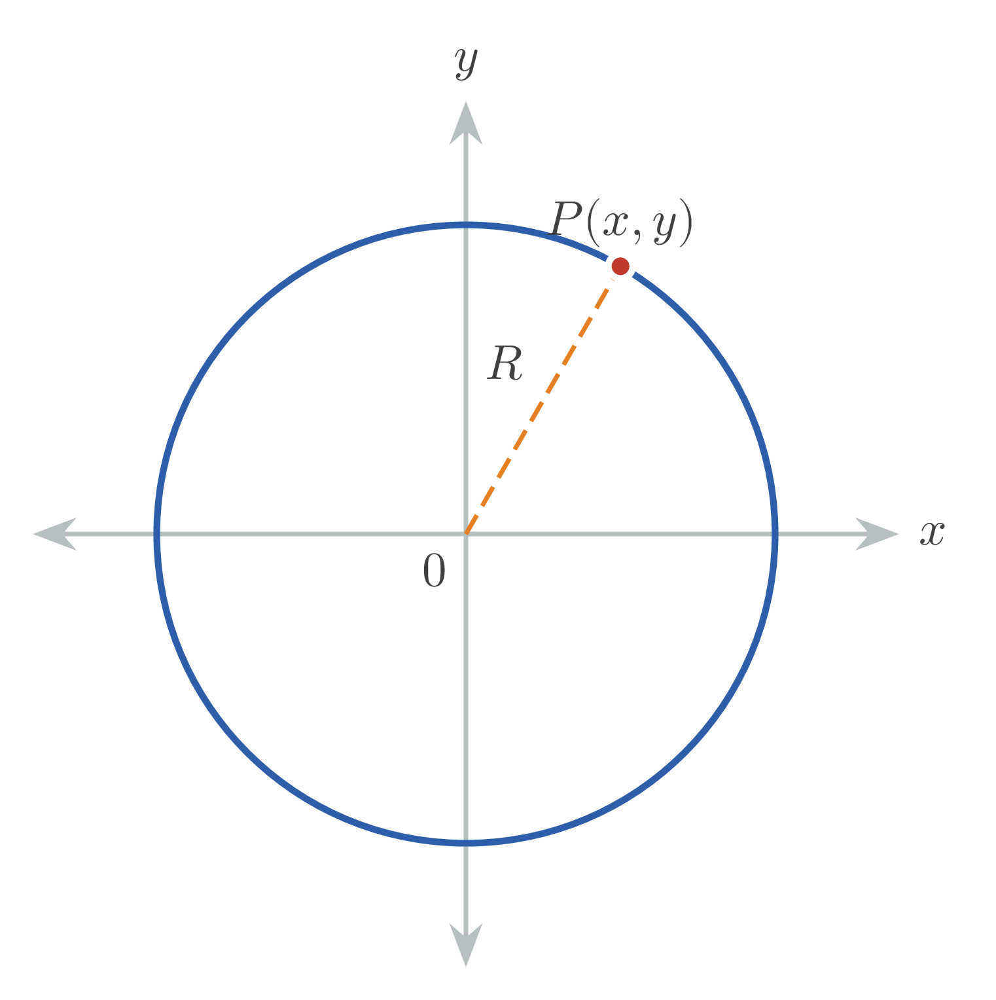
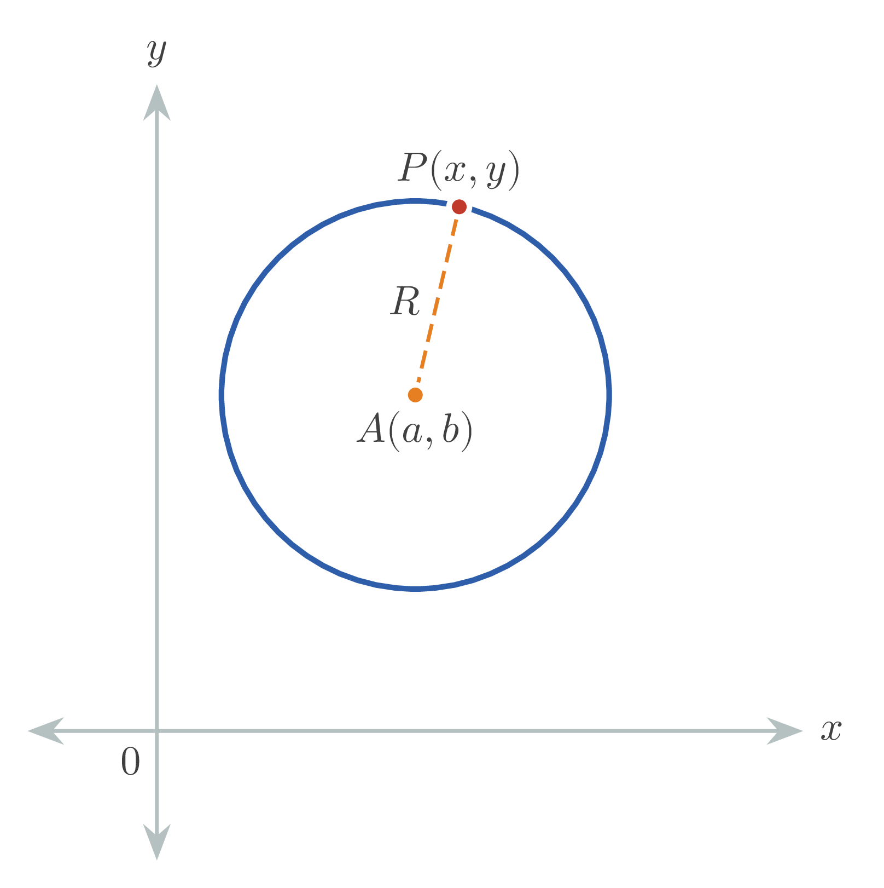
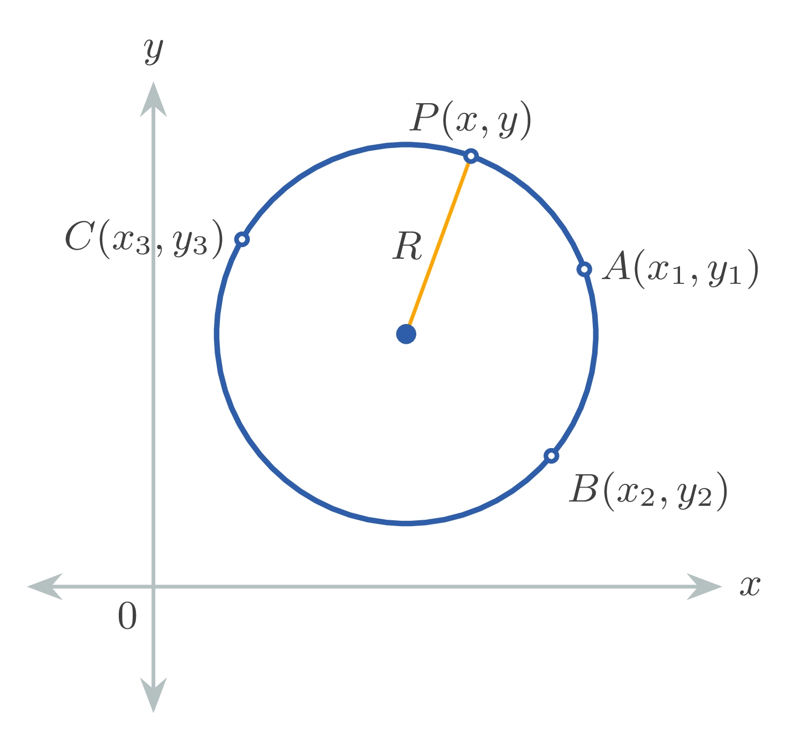

Radius: $R$
Center of circle: $(a,b)$
Point coordinates: $x,y,x_1,y_1,...$
Real numbers: $A,B,C,D,E,F,t$
- Equation of a Circle Centered at the Origin (Standard Form)
$$x^2 + y^2 = R^2$$

- Equation of a Circle Centered at Any Point $(a,b)$
$$(x-a)^2 + (y-b)^2 = R^2$$

- Three Point Form
$$\begin{vmatrix}
x^2+y^2& x& y& 1 \\
x_1^2+y_1^2& x_1& y_1& 1 \\
x_2^2+y_2^2& x_2& y_2& 1 \\
x_3^2+y_3^2& x_3& y_3& 1 \\
\end{vmatrix}=0$$

- Parametric Form
$$\begin{cases} x=R\cos t \\ y=R\sin t \end{cases},\,0\le t\le 2\pi$$
- General Form
$$Ax^2+Ay^2+Dx+Ey+F=0$$
($A$ nonzero, $D^2+E^2\gt 4AF$).
The center of the circle has coordinates $(a,b)$, where
$$a=-\dfrac{D}{2A},\,b=-\dfrac{E}{2A}.$$
The radius of the circle is
$$R=\sqrt{ \dfrac{D^2+E^2-4AF}{2\big| A\big|}}$$